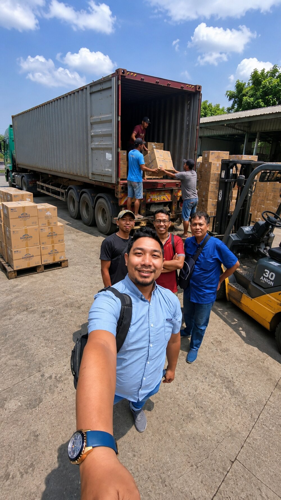
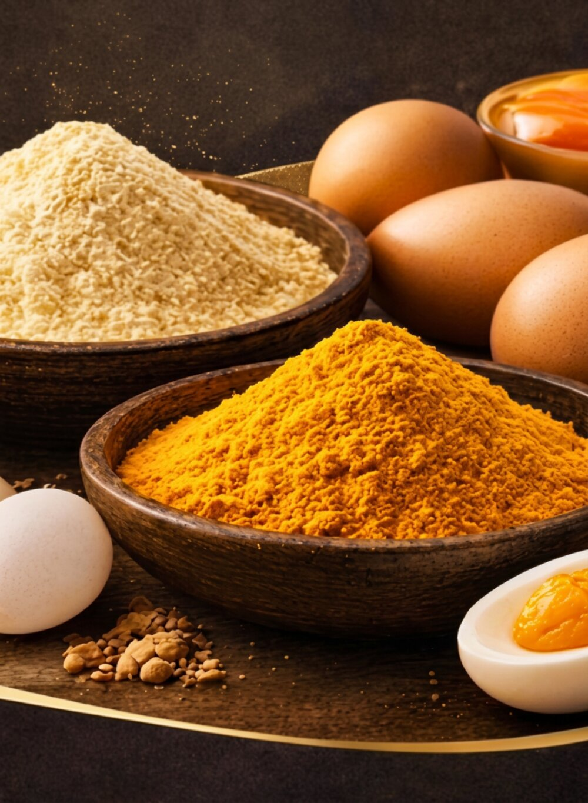
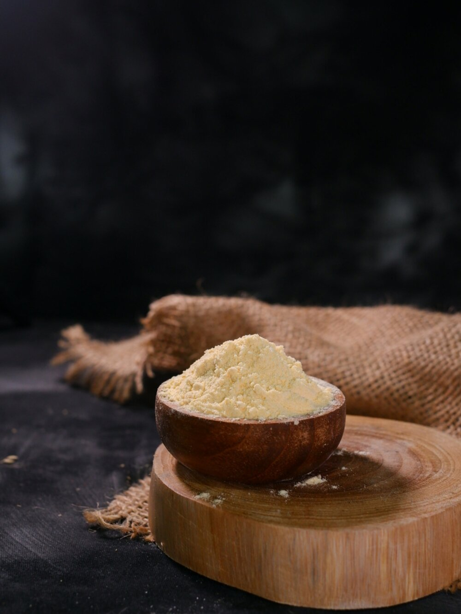
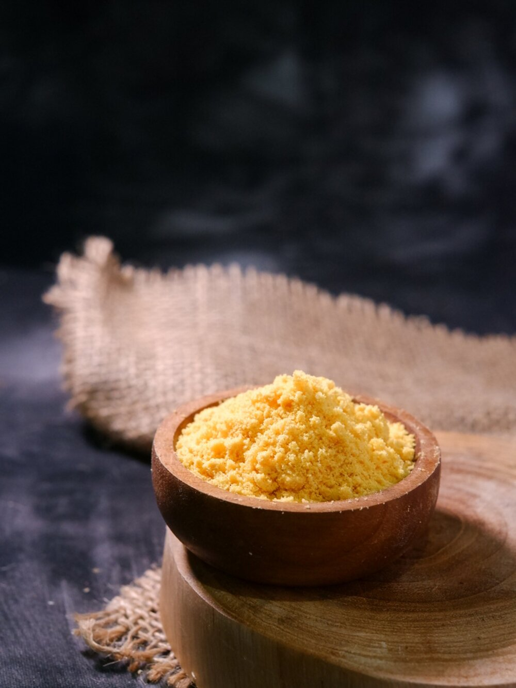
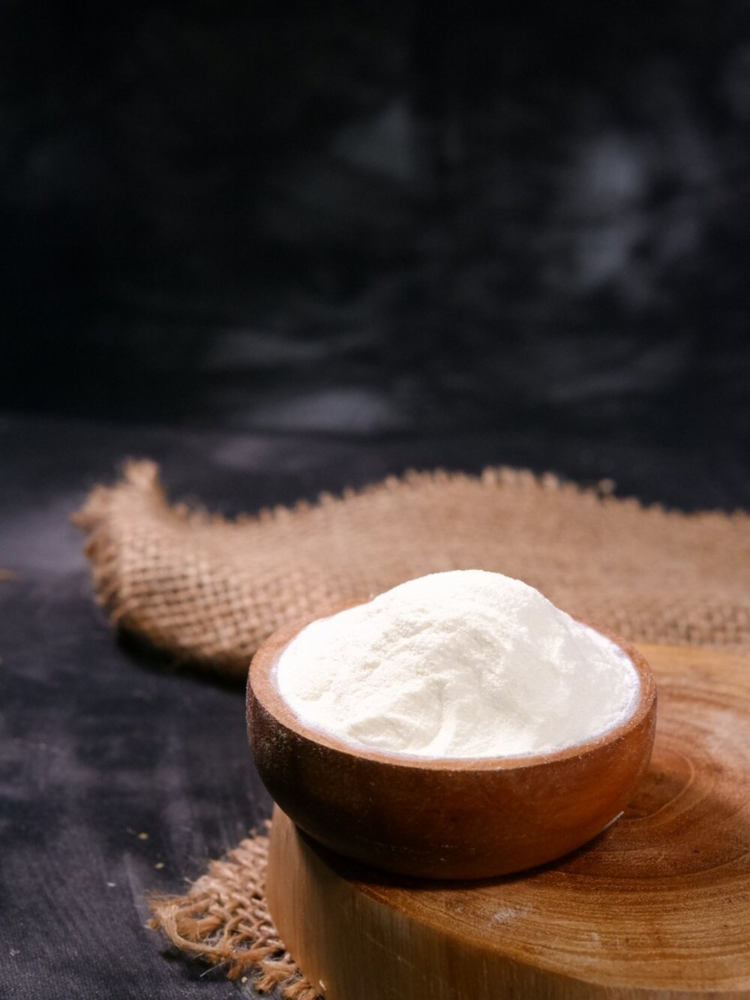
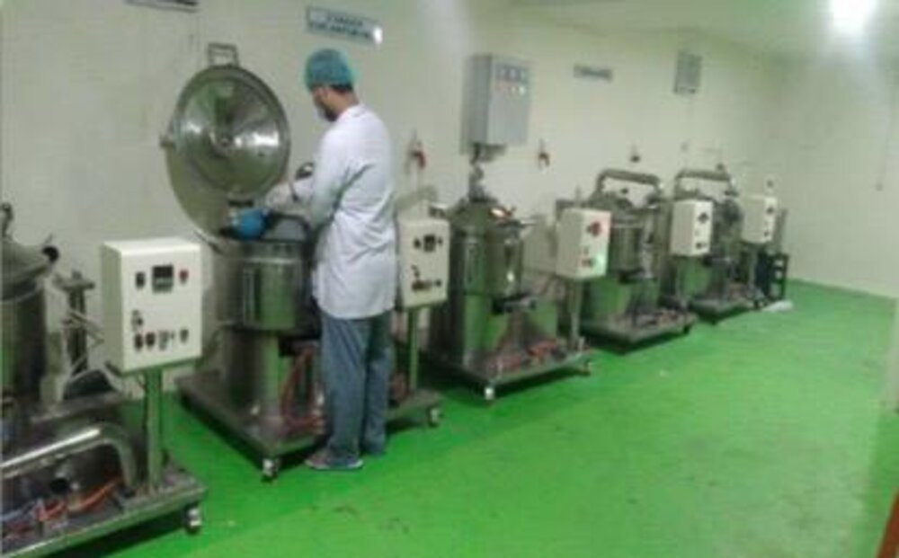
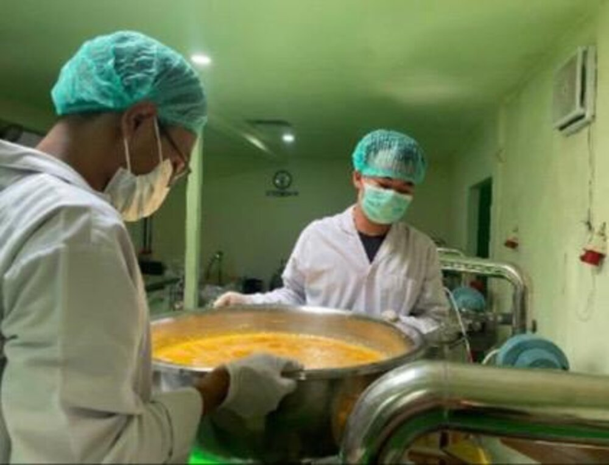
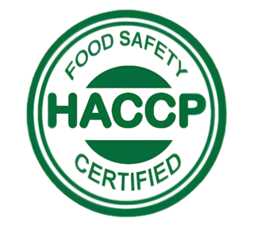

"From Egg to Excellence — Bringing innovation to every bite"
PT. Sekawan Muda Sejahtera memproduksi Whole Egg, Egg Yolk, dan Egg Albumen Powder dengan teknologi Agitated & Pan Drying — teknologi pengolahan tepung telur pertama di Indonesia, bersertifikat HACCP & Halal.

Profil Perusahaan
PT. Sekawan Muda Sejahtera yang berkedudukan di Surabaya, Jawa Timur, adalah perusahaan dengan bermitrakan UMKM yang bergerak di bidang Food and Beverage. Dirintis sejak tahun 2019, dan resmi berbadan hukum sejak September 2026.
Kami fokus pada keahlian memproduksi tepung telur ayam — Whole Egg Powder, Egg Yolk Powder, dan Egg Albumen Powder — dengan telur yang berasal langsung dari mitra peternak, diolah secara higienis sesuai standar HACCP.
Headquartered in Surabaya, East Java, PT. Sekawan Muda Sejahtera forges partnerships with SMEs in the Food & Beverage sector, established in 2019 and officially incorporated in September 2026 — specializing in whole egg, yolk, and albumen powders sourced from partner farmers.
Teknologi & Produksi
Kami memproduksi tepung telur dengan konsep Zero Waste Production menggunakan teknologi Agitated & Pan Drying — teknologi pengolahan tepung telur pertama di Indonesia yang mampu menghasilkan tepung telur berkualitas tinggi secara konsisten.
Under the Zero Waste Production concept, our Agitated & Pan Drying technology — the first of its kind in Indonesia — delivers consistently high-quality egg powder.

Bersumber langsung dari mitra peternak lokal.
Diolah higienis sesuai standar HACCP.
Whole Egg · Egg Yolk · Egg Albumen Powder.
Visi Kami
Menjadi produsen tepung telur terpercaya yang menghadirkan standar keamanan pangan kelas dunia, mendukung industri makanan dengan produk yang konsisten, aman, dan berkualitas.
To be a trusted producer of egg powder that upholds world-class food safety standards, empowering the food industry with reliable, safe, and superior-quality products.
Misi Kami
Produk Kami
Three egg powder variants, one uncompromising quality standard.

Whole Egg PowderBubuk telur utuh yang dihasilkan dari telur segar melalui proses Agitated & Pan Drying dengan standar HACCP. Mempertahankan karakteristik alami telur utuh, dengan kepraktisan, daya simpan lebih panjang, dan kualitas yang konsisten.

Egg Yolk PowderProduk premium yang dihasilkan dari kuning telur segar melalui proses Agitated & Pan Drying dengan standar HACCP — solusi praktis dan andal sebagai pengganti kuning telur segar.

Egg Albumen PowderBubuk putih telur yang dihasilkan dari telur segar melalui proses Agitated & Pan Drying dengan standar HACCP, mempertahankan karakteristik alami putih telur dengan daya simpan lebih panjang.
Portofolio & Fasilitas
Produced to world-class food safety standards.


Kami berkomitmen memberikan solusi terbaik melalui pelayanan yang cepat, transparan, dan profesional — sehingga mampu menjadi mitra bisnis yang dapat diandalkan.


Kontak Kami
"Growing Together with Integrity"
Hubungi tim kami untuk informasi produk, spesifikasi teknis, dan kerja sama pasokan tepung telur.
Chat via WhatsApp Kirim Email